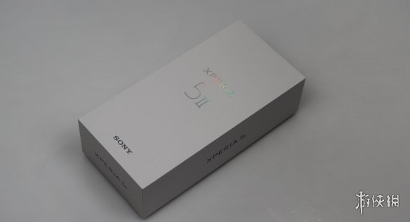
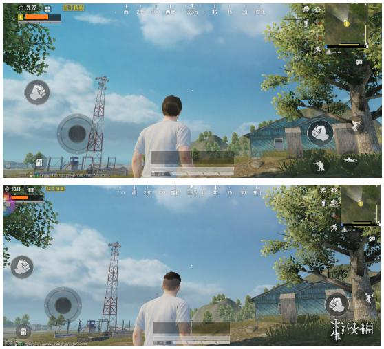
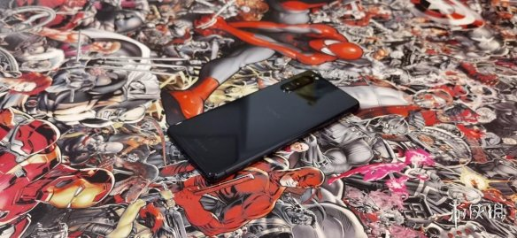
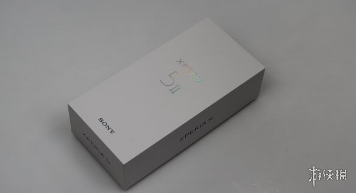
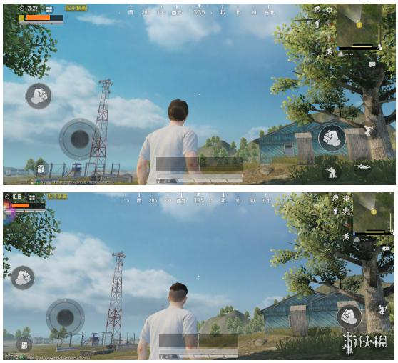
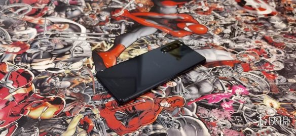

为速度而生，为信仰而战——索尼Xperia 5 Ⅱ评测
10 月 15 日，索尼中国宣布推出年度5G旗舰智能手机 Xperia 1 II 与 Xperia 5 II。区别于索尼Xperia 1 Ⅱ的6.5寸屏幕，Xperia 5 Ⅱ延续6.1寸小尺寸屏幕。同时Xperia 5 Ⅱ首次加入120Hz屏幕刷新率、搭载高通骁龙865处理器，石墨烯散热架构，散热表现异常优异。如果说索尼Xperia 1 Ⅱ是针对摄影而生的一部手机，那么索尼Xperia 5 Ⅱ则是更倾向于游戏性能与日常操作体验。
游侠网有幸在Xperia 5 Ⅱ发售之初就获得了这台机器，它的性能表现究竟如何来跟我们一起看看吧。
Xperia 5 Ⅱ外观介绍
Xperia 5 Ⅱ的包装保持节约风格，通体纯白，盒身上只有“Xperia 5 Ⅱ”和e“Sony”logo字样，显得简洁大方。

性能方面，搭载高通骁龙865 的 Xperia 5 II 在CPU运算上当然不会差，安兔兔跑分有 55.7 万分。 作为今年旗舰级处理器这分数已经是很优异了，所以玩家们对于手机性能大可不必担心。
使用Xperia 5 II的21:9的屏幕玩游戏时可以带来更广阔的游戏视野。搭配专为提升游戏性能的120Hz屏幕刷新率、240Hz动态模糊抑制和240Hz屏幕采样率，画面动作更加流畅，触控反应比上一代Xperia 5 提升约为35%，游戏体验更加流畅。
下图是在《和平精英》中同一位置、同一视角下的游戏截图，其中下方第二张截图是用本机Xperia 5 II 的截图画面，我们可以清晰地看到在水平视角上，Xperia 5 II明显要比其他手机看到的更多、视野更加广阔。

Xperia 系列一向以精美的外观设计为使用者称道。如今，Xperia 5 II 在游戏、摄影、显示等娱乐功能上也为使用者带来优秀的体验。它所带来的，不仅仅是技术与规格的堆砌，一手能掌握所带来的使用感，也是旗舰手机市场上独特的存在。如果你喜欢21：9比例手机的操作手感，又不喜欢大屏幕手机的话，这次的 Xperia 5 II 可以说是绝对符合你心目中对于小手机的憧憬。

注：文章转载自网络
Xperia 5 Ⅱ的包装保持节约风格，通体纯白，盒身上只有“Xperia 5 Ⅱ”和e“Sony”logo字样，显得简洁大方。

性能方面，搭载高通骁龙865 的 Xperia 5 II 在CPU运算上当然不会差，安兔兔跑分有 55.7 万分。 作为今年旗舰级处理器这分数已经是很优异了，所以玩家们对于手机性能大可不必担心。
使用Xperia 5 II的21:9的屏幕玩游戏时可以带来更广阔的游戏视野。搭配专为提升游戏性能的120Hz屏幕刷新率、240Hz动态模糊抑制和240Hz屏幕采样率，画面动作更加流畅，触控反应比上一代Xperia 5 提升约为35%，游戏体验更加流畅。
下图是在《和平精英》中同一位置、同一视角下的游戏截图，其中下方第二张截图是用本机Xperia 5 II 的截图画面，我们可以清晰地看到在水平视角上，Xperia 5 II明显要比其他手机看到的更多、视野更加广阔。

Xperia 系列一向以精美的外观设计为使用者称道。如今，Xperia 5 II 在游戏、摄影、显示等娱乐功能上也为使用者带来优秀的体验。它所带来的，不仅仅是技术与规格的堆砌，一手能掌握所带来的使用感，也是旗舰手机市场上独特的存在。如果你喜欢21：9比例手机的操作手感，又不喜欢大屏幕手机的话，这次的 Xperia 5 II 可以说是绝对符合你心目中对于小手机的憧憬。

注：文章转载自网络
新闻

Switch重磅更新
Switch主机11.0更新：向手机电脑传输图片/视频更便捷。...
- 真人片《一人之下》选角正式启动 16-28岁的华人演员
- 电竞选手要持证上岗！电子竞技员国家技能标准将出台
- 经典喜加一！《仙剑奇侠传》DOS版方块商店免费领取
销量排行榜

1.赛博朋克2077
类型：角色扮演RPG
平台：PC/PS4等
发行：CD Projekt RED
- 2.足球经理2021
- 3.Phasmophobia
- 4.哈迪斯：杀出地狱
- 5.荒野大镖客2
- 6.光环：士官长合集
- 7.绝地求生大逃杀
- 8.死亡搁浅